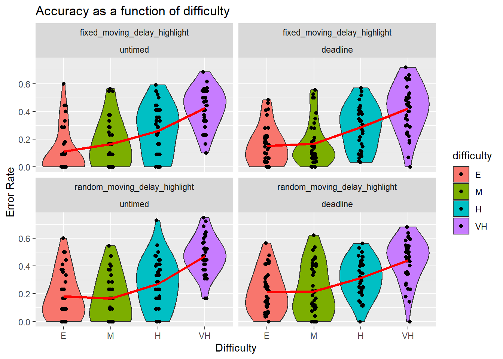
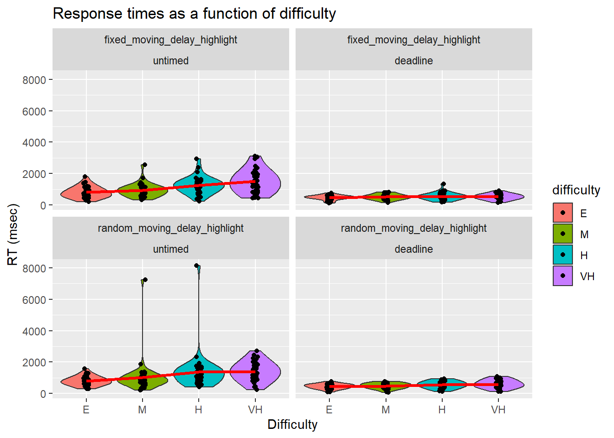
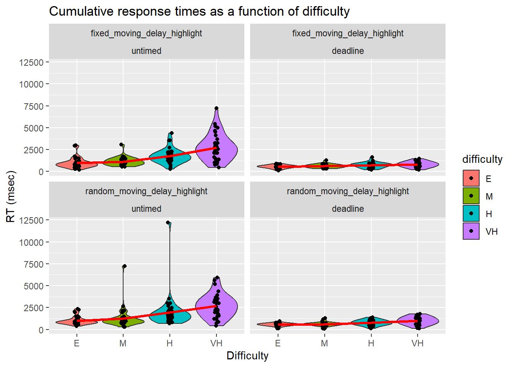
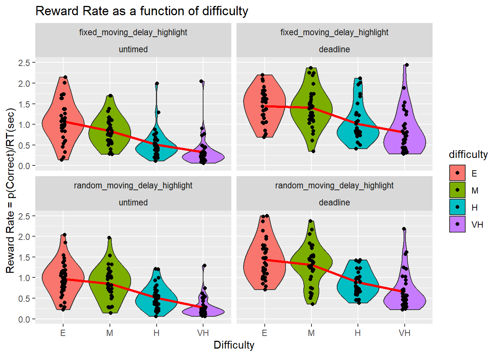
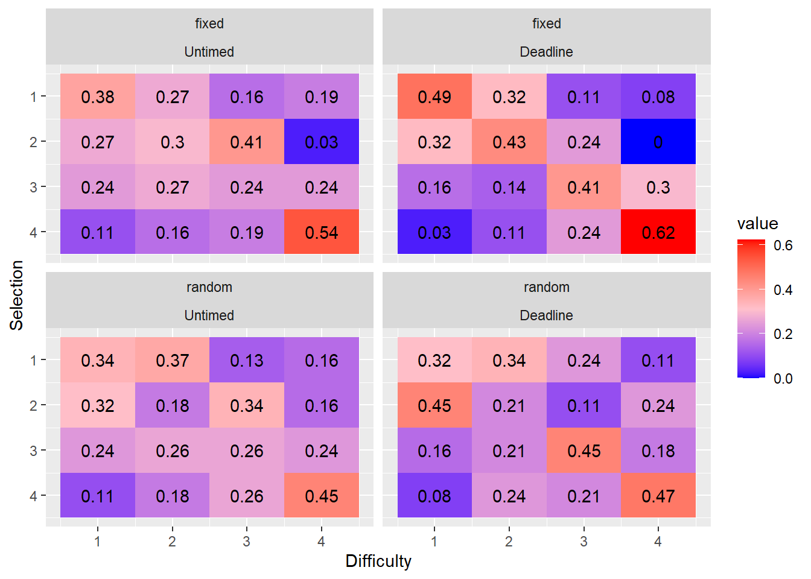
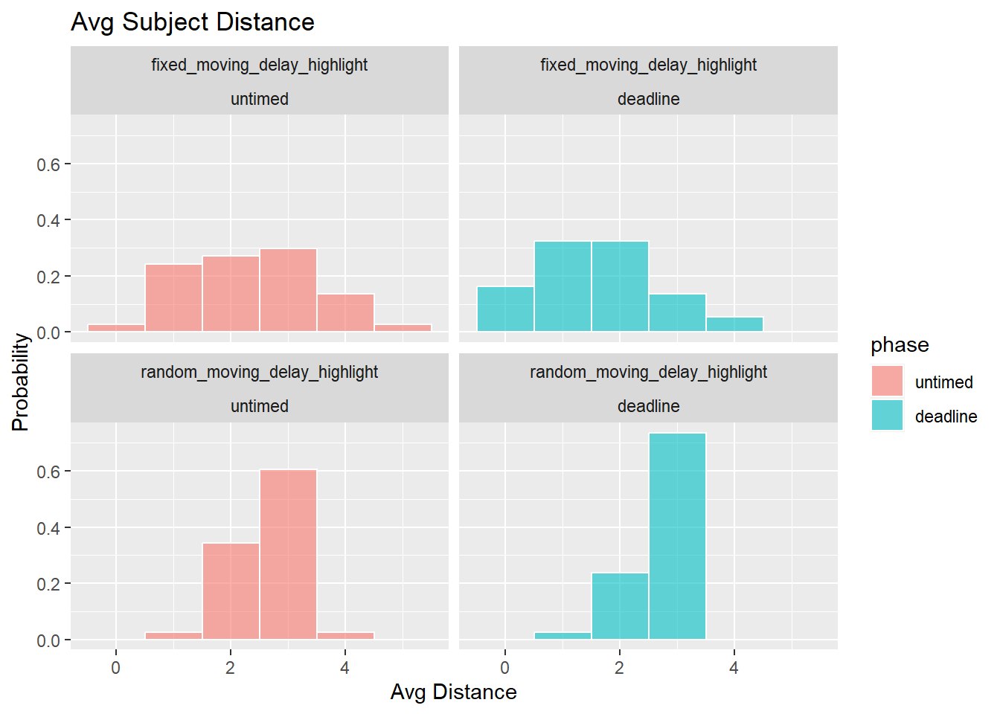
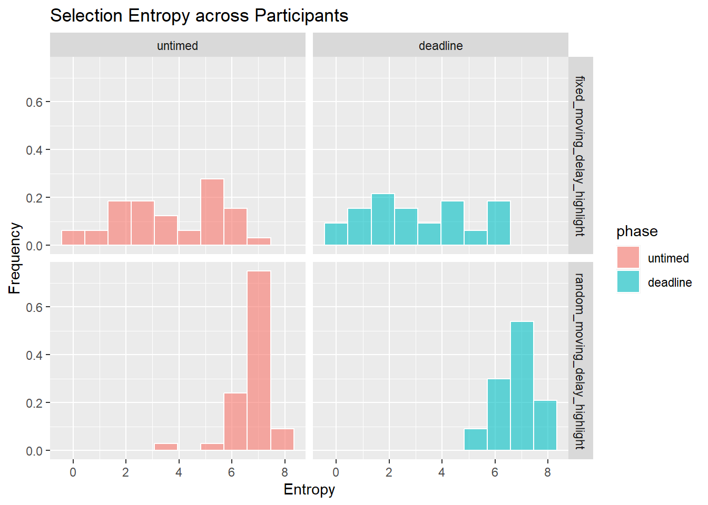
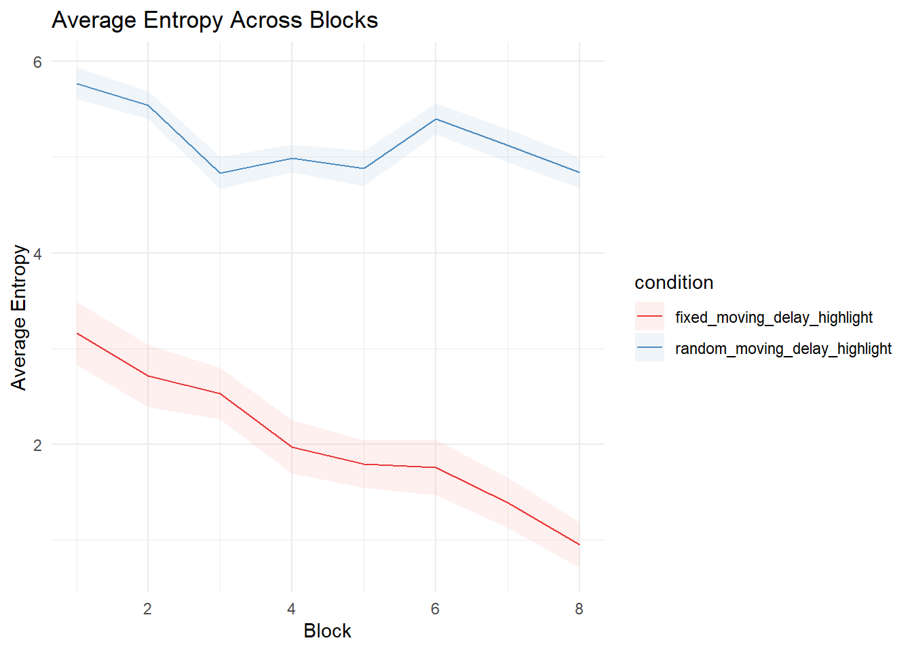

Last updated: 2025-07-29
Checks: 7 0
Knit directory: SCHEDULING/
This reproducible R Markdown analysis was created with workflowr (version 1.7.1). The Checks tab describes the reproducibility checks that were applied when the results were created. The Past versions tab lists the development history.
Great! Since the R Markdown file has been committed to the Git repository, you know the exact version of the code that produced these results.
Great job! The global environment was empty. Objects defined in the global environment can affect the analysis in your R Markdown file in unknown ways. For reproduciblity it’s best to always run the code in an empty environment.
The command set.seed(20221107) was run prior to running
the code in the R Markdown file. Setting a seed ensures that any results
that rely on randomness, e.g. subsampling or permutations, are
reproducible.
Great job! Recording the operating system, R version, and package versions is critical for reproducibility.
Nice! There were no cached chunks for this analysis, so you can be confident that you successfully produced the results during this run.
Great job! Using relative paths to the files within your workflowr project makes it easier to run your code on other machines.
Great! You are using Git for version control. Tracking code development and connecting the code version to the results is critical for reproducibility.
The results in this page were generated with repository version bd4637a. See the Past versions tab to see a history of the changes made to the R Markdown and HTML files.
Note that you need to be careful to ensure that all relevant files for
the analysis have been committed to Git prior to generating the results
(you can use wflow_publish or
wflow_git_commit). workflowr only checks the R Markdown
file, but you know if there are other scripts or data files that it
depends on. Below is the status of the Git repository when the results
were generated:
Ignored files:
Ignored: .Rhistory
Ignored: .Rproj.user/
Ignored: analysis/patch_selection.png
Ignored: analysis/patch_selection_8.png
Ignored: analysis/patch_selection_avg.png
Ignored: analysis/site_libs/
Untracked files:
Untracked: analysis/Notes.txt
Untracked: analysis/additional_scripts.R
Untracked: analysis/analysis_2025_deadlines.Rmd
Untracked: analysis/analysis_2025_dynamicNoise_fixed.Rmd
Untracked: analysis/analysis_exp10_preemption.Rmd
Untracked: analysis/analysis_exp10_preemption1and2.Rmd
Untracked: analysis/analysis_exp10b_preemption-pareto.Rmd
Untracked: analysis/analysis_exp11_facesInNoise.Rmd
Untracked: analysis/analysis_exp11_facesInNoise_EW.Rmd
Untracked: analysis/analysis_exp11_facesInNoise_EW_v2.Rmd
Untracked: analysis/analysis_exp12_variability.Rmd
Untracked: analysis/analysis_exp12_variability_cynthia.Rmd
Untracked: analysis/analysis_exp12_variability_cynthia_update.Rmd
Untracked: analysis/analysis_exp13_preemption.Rmd
Untracked: analysis/analysis_exp14_ASD_individual_differences.Rmd
Untracked: analysis/analysis_exp9_preselection.Rmd
Untracked: analysis/analysis_exp9_preselection1and2.Rmd
Untracked: analysis/analysis_exp9_select-then-complete.Rmd
Untracked: analysis/anovaData/
Untracked: analysis/archive/
Untracked: analysis/correlation_test.m
Untracked: analysis/fd_pl.rds
Untracked: analysis/fu_pl.rds
Untracked: analysis/instructions_for_honours_students.txt
Untracked: analysis/joyPlot.m
Untracked: analysis/joyPlot.zip
Untracked: analysis/joyPlot/
Untracked: analysis/loadData.m
Untracked: analysis/mstrfind.m
Untracked: analysis/plotDistanceByTrials.m
Untracked: analysis/prereg/
Untracked: analysis/reward rate analysis.docx
Untracked: analysis/rewardRate.jpg
Untracked: analysis/scheduling_analysis_functions.R
Untracked: analysis/temp/
Untracked: analysis/toAnalyse/
Untracked: analysis/wflow_code_string.txt
Untracked: code/AUTSIMQ/
Untracked: code/DYNAMICNOISE/
Untracked: code/FACESINNOISE/
Untracked: code/Notes on how the scheduling jsPsych code works.txt
Untracked: code/PREEMPT/
Untracked: code/PREPLAN/
Untracked: code/SCHEDULEPIX/
Untracked: code/SCHEDULEPIX_UON/
Untracked: code/SCHEDULERDK/
Untracked: code/SCHEDULERDK_UON/
Untracked: code/SCHEDULE_REWARD/
Untracked: code/SCHEDULE_TYPING/
Untracked: code/SMALL_N_LETTERNOISE/
Untracked: code/TRAIN_PREEMPT/
Untracked: code/TRAIN_VARYING_DEADLINES/
Untracked: code/autism_quotient.txt
Untracked: data/2020_exp1_rdk_data.csv
Untracked: data/2020_exp2_rdk_data.csv
Untracked: data/2021_exp2b_rdk_data_avgtime.csv
Untracked: data/2021_exp3a_rdk_data_dynamic.csv
Untracked: data/2021_exp3b_rdk_data_dynamic_highlight.csv
Untracked: data/2021_exp3c_rdk_data_dynamic_shortdotlife.csv
Untracked: data/2023-exp10-preemption-pareto.csv
Untracked: data/2023-exp10-preemption-selections.csv
Untracked: data/2023-exp10-preemption.csv
Untracked: data/2023-exp11-facesInNoise-unlabelledCondition.csv
Untracked: data/2023-exp11-facesInNoise.csv
Untracked: data/2023-exp9-preplan.csv
Untracked: data/2023-exp9-select-then-complete.csv
Untracked: data/2023_AQdata.csv
Untracked: data/2024-exp12-variability.csv
Untracked: data/2024-exp12-variability_v2.csv
Untracked: data/2024-exp12-variability_v3.csv
Untracked: data/2024-exp13-preemption.csv
Untracked: data/2024-exp13-preemption_v2.csv
Untracked: data/2024-scheduling-data.csv
Untracked: data/2024_data_rdk_select_first_AQcorrelation_update.csv
Untracked: data/2024_data_typing_train_variability.csv
Untracked: data/2025_data_dynamic_noise_fixed_locations.csv
Untracked: data/2025_data_typing_train_deadlines_exp1rates.csv
Untracked: data/2025_data_typing_train_variability_fulldataset.csv
Untracked: data/ASRSscoring.csv
Untracked: data/OLIFEscoring.csv
Untracked: data/OLIFEscoring_v0.csv
Untracked: data/POLYscoring.csv
Untracked: data/SQL query.txt
Untracked: data/archive/
Untracked: data/create_database.sql
Untracked: data/dataToAnalyse/
Untracked: data/data_dictionary_deadlines.csv
Untracked: data/data_dictionary_dynamic_noise.csv
Untracked: data/data_dictionary_facesInNoise.csv
Untracked: data/data_dictionary_preemption.csv
Untracked: data/data_dictionary_preplan.csv
Untracked: data/data_dictionary_select_then_complete.csv
Untracked: data/data_dictionary_variability.csv
Untracked: data/exp6a_typing_exponential.xlsx
Untracked: data/exp6b_typing_linear.xlsx
Untracked: data/exp8a_typing_no_reward_data_selections.csv
Untracked: data/rawdata_incEmails/
Untracked: data/selections/
Untracked: data/sona data/
Untracked: data/summaryFiles/
Untracked: data/temp_AQcorrelationReplication/
Untracked: spatial_pdist.Rdata
Unstaged changes:
Modified: analysis/analysis_exp1_labelled_nodelay.Rmd
Modified: analysis/analysis_exp7e_rdk_reward_points.Rmd
Modified: analysis/analysis_exp8a_typing_no_reward.Rmd
Deleted: analysis/prereg.Rmd
Deleted: analysis/prereg_v2.Rmd
Deleted: analysis/prereg_v3.Rmd
Deleted: analysis/prereg_v6_AQcorrelation.Rmd
Modified: data/README.md
Modified: data/data_dictionary.csv
Modified: data/data_dictionary_avgTime.csv
Modified: data/data_dictionary_ruby.csv
Modified: data/data_dictionary_shortdotlife.csv
Deleted: data/exp1_rdk_data.csv
Deleted: data/exp2_rdk_data.csv
Deleted: data/exp2b_rdk_data_avgtime.csv
Deleted: data/exp3a_rdk_data_dynamic.csv
Deleted: data/exp3b_rdk_data_dynamic_highlight.csv
Deleted: data/exp3c_rdk_data_dynamic_shortdotlife.csv
Note that any generated files, e.g. HTML, png, CSS, etc., are not included in this status report because it is ok for generated content to have uncommitted changes.
These are the previous versions of the repository in which changes were
made to the R Markdown
(analysis/analysis_exp3b_rdk_dynamic_delay_highlight.Rmd)
and HTML
(docs/analysis_exp3b_rdk_dynamic_delay_highlight.html)
files. If you’ve configured a remote Git repository (see
?wflow_git_remote), click on the hyperlinks in the table
below to view the files as they were in that past version.
| File | Version | Author | Date | Message |
|---|---|---|---|---|
| Rmd | bd4637a | knowlabUnimelb | 2025-07-29 | Update analysis code to use shared file repo |
| html | 2e6ecdf | knowlabUnimelb | 2022-11-09 | Build site. |
| Rmd | 67e1aac | knowlabUnimelb | 2022-11-09 | Publish data and analysis files |
Ruby Steinberg1, Ami Eidels2, and Daniel R. Little1
1 The University of Melbourne, 2 The University of Newcastle
Data Cleaning
Subjects completed the experiment by clicking a link with the uniquely generated id code. Subjects were able to use the link multiple times; further, subjects were able to exit the experiment at any time. Consequently, the datafile contains partially completed data for some subjects which needed to be identified and removed.
We first summarize performance by answering the following questions:
We next analysed performance on the RDK discriminations. We then asked:

| Version | Author | Date |
|---|---|---|
| 2e6ecdf | knowlabUnimelb | 2022-11-09 |

We further broke down RTs by condition, deadline, and difficulty.

| name[none] | ss[none] | df[none] | ms[none] | F[none] | p[none] | partEta[none] | |
|---|---|---|---|---|---|---|---|
| “Phase” | Phase | 73.203 | 1 | 73.203 | 30.189 | 0.000 | 0.293 |
| [“Phase”,“condition”] | Phase:condition | 0.370 | 1 | 0.370 | 0.152 | 0.697 | 0.002 |
| [“Phase”,“condition”,“.RES”] | Residual | 177.012 | 73 | 2.425 | NA | NA | NA |
| “Difficulty” | Difficulty | 63.899 | 3 | 21.300 | 49.291 | 0.000 | 0.403 |
| [“Difficulty”,“condition”] | Difficulty:condition | 2.431 | 3 | 0.810 | 1.875 | 0.135 | 0.025 |
| [“Difficulty”,“condition”,“.RES”] | Residual | 94.635 | 219 | 0.432 | NA | NA | NA |
| [“Phase”,“Difficulty”] | Phase:Difficulty | 0.125 | 3 | 0.042 | 0.180 | 0.910 | 0.002 |
| [“Phase”,“Difficulty”,“condition”] | Phase:Difficulty:condition | 0.443 | 3 | 0.148 | 0.636 | 0.593 | 0.009 |
| [“Phase”,“Difficulty”,“condition”,“.RES”] | Residual | 50.901 | 219 | 0.232 | NA | NA | NA |
| name | ss | df | ms | F | p | partEta | |
|---|---|---|---|---|---|---|---|
| “condition” | condition | 0.159 | 1 | 0.159 | 0.046 | 0.831 | 0.001 |
| “Residual” | Residual | 254.640 | 73 | 3.488 | NA | NA | NA |

We tested whether the marginal distributions were different from uniformally random selection using the fact that the mean rank is distributed according to a \(\chi^2\) distribution with the following test-statistic: \[\chi^2 = \frac{12N}{k(k+1)}\sum_{j=1}^k \left(m_j - \frac{k+1}{2} \right)^2\] see (Marden, 1995).
| condition | phase | chi2 | df | p |
|---|---|---|---|---|
| fixed_moving_delay_highlight | untimed | 13.57 | 3 | 0.00 |
| fixed_moving_delay_highlight | deadline | 40.36 | 3 | 0.00 |
| random_moving_delay_highlight | untimed | 10.52 | 3 | 0.01 |
| random_moving_delay_highlight | deadline | 12.98 | 3 | 0.00 |
We compared the location conditions and phases using chi-2 analysis.



| condition | phase | mrt_sel1 | mrt_sel2 | mrt_sel3 | mrt_sel4 |
|---|---|---|---|---|---|
| fixed_moving_delay_highlight | deadline | 796.91 | 818.89 | 764.69 | 660.65 |
| fixed_moving_delay_highlight | untimed | 1636.26 | 1411.89 | 1334.27 | 1216.91 |
| random_moving_delay_highlight | deadline | 890.61 | 939.98 | 821.06 | 547.00 |
| random_moving_delay_highlight | untimed | 1690.11 | 1337.15 | 1248.06 | 1206.46 |
REPEATED MEASURES ANOVA
Within Subjects Effects
───────────────────────────────────────────────────────────────────────────────────────────────────────────────
Sum of Squares df Mean Square F p η²-p
───────────────────────────────────────────────────────────────────────────────────────────────────────────────
Phase 5.726783e+7 1 5.726783e+7 328.6435350 < .0000001
0.8182468
Phase:condition 96571.79 1 96571.79 0.5541976 0.4589974 0.0075345
Residual 1.272063e+7 73 174255.16
Selection 1.003963e+7 3 3346541.75 35.4971651 < .0000001
0.3271714
Selection:condition 378013.65 3 126004.55 1.3365452 0.2633695
0.0179797
Residual 2.064651e+7 219 94276.31
Phase:Selection 2520608.78 3 840202.93 12.8470487 < .0000001
0.1496504
Phase:Selection:condition 503050.64 3 167683.55 2.5639505 0.0556119
0.0339309
Residual 1.432270e+7 219 65400.46
───────────────────────────────────────────────────────────────────────────────────────────────────────────────
Note. Type 3 Sums of Squares
Between Subjects Effects
────────────────────────────────────────────────────────────────────────────────────────────
Sum of Squares df Mean Square F p η²-p
────────────────────────────────────────────────────────────────────────────────────────────
condition 15936.87 1 15936.87 0.04118981 0.8397366 0.0005639
Residual 2.824464e+7 73 386912.89
────────────────────────────────────────────────────────────────────────────────────────────
Note. Type 3 Sums of Squares
ASSUMPTIONS
Tests of Sphericity
───────────────────────────────────────────────────────────────────────────────────────────
Mauchly’s W p Greenhouse-Geisser ε Huynh-Feldt ε
───────────────────────────────────────────────────────────────────────────────────────────
Phase 1.0000000 NaN ᵃ 1.0000000 1.0000000
Selection 0.2520584 < .0000001 0.5759439 0.5886335
Phase:Selection 0.4643350 < .0000001 0.7181513 0.7407174
───────────────────────────────────────────────────────────────────────────────────────────
ᵃ The repeated measures has only two levels. The assumption of
sphericity is always met when the repeated measures has only two
levels.
Homogeneity of Variances Test (Levene’s)
────────────────────────────────────────────────────────── F df1 df2
p
────────────────────────────────────────────────────────── rt1_untimed
0.815706629 1 73 0.3694091
rt2_untimed 0.004577798 1 73 0.9462417
rt3_untimed 0.009903102 1 73 0.9210027
rt4_untimed 1.357731883 1 73 0.2477244
rt1_deadline 0.854421456 1 73 0.3583500
rt2_deadline 2.917339386 1 73 0.0918817
rt3_deadline 0.827321066 1 73 0.3660417
rt4_deadline 2.023725305 1 73 0.1591180
──────────────────────────────────────────────────────────
We can treat each task selection as a probabilistic choice given by a Luce’s choice rule (Luce, 1959), where each task is represented by some strength, \(\nu\). The probability of selecting task \(i_j\) from set \(S = \{i_1, i_2, ..., i_J \}\), where J is the number of tasks, is:
\[p\left(i_j |S \right) = \frac{\nu_{i_j}}{\sum_{i \in S} \nu_{i}}. \]
Plackett (1975) generalised this model to explain the distribution over a sequence of choices (i.e., ranks). In this case, after each choice, the choice set is reduce by one (i.e., sampling without replacement). This probability of observing a specific selection order, \(i_1 \succ ... \succ i_J\) is:
\[p\left(i_j |A \right) = \prod_{j=1}^J \frac{\nu_{i_j}}{\sum_{i \in A_j} \nu_{i}}, \]
where \(A_j\) is the current choice set.
sessionInfo()R version 4.3.1 (2023-06-16 ucrt)
Platform: x86_64-w64-mingw32/x64 (64-bit)
Running under: Windows 10 x64 (build 19045)
Matrix products: default
locale:
[1] LC_COLLATE=English_Australia.utf8 LC_CTYPE=English_Australia.utf8
[3] LC_MONETARY=English_Australia.utf8 LC_NUMERIC=C
[5] LC_TIME=English_Australia.utf8
time zone: Australia/Sydney
tzcode source: internal
attached base packages:
[1] stats4 grid stats graphics grDevices utils datasets
[8] methods base
other attached packages:
[1] statmod_1.5.0 betareg_3.2-0 jmv_2.4.9 pmr_1.2.5.1
[5] jpeg_0.1-10 rstatix_0.7.2 lmerTest_3.1-3 lme4_1.1-34
[9] Matrix_1.6-1.1 png_0.1-8 reshape2_1.4.4 knitr_1.44
[13] english_1.2-6 gtools_3.9.4 DescTools_0.99.50 lubridate_1.9.3
[17] forcats_1.0.0 stringr_1.5.0 dplyr_1.1.3 purrr_1.0.2
[21] readr_2.1.4 tidyr_1.3.0 tibble_3.2.1 ggplot2_3.4.3
[25] tidyverse_2.0.0 workflowr_1.7.1
loaded via a namespace (and not attached):
[1] gld_2.6.6 sandwich_3.0-2 readxl_1.4.3
[4] rlang_1.1.1 magrittr_2.0.3 multcomp_1.4-25
[7] git2r_0.32.0 e1071_1.7-13 compiler_4.3.1
[10] flexmix_2.3-19 getPass_0.2-2 callr_3.7.3
[13] vctrs_0.6.3 pkgconfig_2.0.3 fastmap_1.1.1
[16] backports_1.4.1 labeling_0.4.3 utf8_1.2.3
[19] promises_1.2.1 rmarkdown_2.25 tzdb_0.4.0
[22] ps_1.7.5 nloptr_2.0.3 modeltools_0.2-23
[25] xfun_0.40 cachem_1.0.8 jsonlite_1.8.7
[28] later_1.3.1 afex_1.3-0 parallel_4.3.1
[31] broom_1.0.5 R6_2.5.1 RColorBrewer_1.1-3
[34] bslib_0.5.1 stringi_1.7.12 car_3.1-2
[37] boot_1.3-28.1 estimability_1.4.1 lmtest_0.9-40
[40] jquerylib_0.1.4 cellranger_1.1.0 numDeriv_2016.8-1.1
[43] Rcpp_1.0.11 zoo_1.8-12 base64enc_0.1-3
[46] nnet_7.3-19 httpuv_1.6.11 splines_4.3.1
[49] timechange_0.2.0 tidyselect_1.2.0 rstudioapi_0.15.0
[52] abind_1.4-5 yaml_2.3.7 codetools_0.2-19
[55] processx_3.8.2 lattice_0.21-8 plyr_1.8.9
[58] withr_2.5.1 coda_0.19-4 evaluate_0.22
[61] survival_3.5-5 proxy_0.4-27 pillar_1.9.0
[64] carData_3.0-5 whisker_0.4.1 generics_0.1.3
[67] rprojroot_2.0.3 hms_1.1.3 munsell_0.5.0
[70] scales_1.2.1 rootSolve_1.8.2.4 minqa_1.2.6
[73] xtable_1.8-4 jmvcore_2.4.7 class_7.3-22
[76] glue_1.6.2 emmeans_1.8.8 lmom_3.0
[79] tools_4.3.1 data.table_1.14.8 Exact_3.2
[82] fs_1.6.3 mvtnorm_1.2-3 colorspace_2.1-0
[85] nlme_3.1-162 Formula_1.2-5 cli_3.6.1
[88] fansi_1.0.4 expm_0.999-7 gtable_0.3.4
[91] sass_0.4.7 digest_0.6.33 TH.data_1.1-2
[94] farver_2.1.1 htmltools_0.5.6 lifecycle_1.0.3
[97] httr_1.4.7 MASS_7.3-60